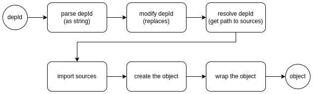

![npm]()

@teqfw/di
A Dependency Injection container for regular JavaScript is provided, which can be used in both browser and Node.js applications. This library exclusively supports ES6 modules. The primary objective of this library is late binding with minimal manual configuration for the container. All linking instructions are encapsulated within the dependency identifiers and source path resolver. Additionally, the container offers the capability to modify object identifiers (preprocessing) and the created objects (postprocessing). These features enable you to more comprehensively distribute the necessary functionality across npm packages and reuse npm packages in different projects, following a ' modular monolith' architecture (see the sample).
Inversion of Control
The primary motivation for creating this library was the concept that JavaScript is a language in which the entire application can be written, both on the front end and the back end. The idea was to enable the use of the same JavaScript code seamlessly on both the front end and the back end without requiring any changes, including additional transpilation.
The main challenge encountered along this path was static importing. When the entire application can fit into a single npm package, all sources can be linked to each other through relative paths. However, if the sources are distributed across different npm packages, addressing them becomes problematic:
// backend style
import something from '@vendor/package/src/Module.js';
// frontend style
import something from 'https://domain.com/@vendor/package/src/Module.js';
The inversion of control (IoC) design pattern came to the rescue. In this pattern, any software object with external dependencies provides a mechanism for obtaining these dependencies. The external environment, whether it's a test unit or an object container, is responsible for creating these dependencies and providing them to the software object.
// constructor-based injection
class Service {
constructor(config, logger) {}
}
If all dependencies are added to software objects through a similar mechanism, there is no need to use static imports in the source code itself. Now, they can be used without any changes, both on the front end and on the back end.
Object Container
Many programming languages implement the Dependency Injection pattern. In this pattern, an application typically
utilizes an object container, responsible for creating all the application's objects and their dependencies. The
@teqfw/di package provides precisely such an object container (src/Container.js). This object container is
initialized and configured at the outset of application execution, after which it assumes responsibility for creating
the remaining application objects:
import Container from '@teqfw/di';
const container = new Container();
const resolver = container.getResolver();
resolver.addNamespaceRoot('App_', pathApp);
resolver.addNamespaceRoot('Sample_Lib_', pathLib);
const app = await container.get('App_Main$');
Since JavaScript does not have its own namespaces, similar to packages in Java and namespaces in PHP, the experience of Zend 1 is used as the basis for identifiers.
Namespaces
The primary purpose of namespaces is to address code elements within an application. In JavaScript (JS) applications, code is organized into npm packages, within which the sources reside in files and directories. Each npm package and its root directory can be linked to a namespace:
Vendor_Package_ => /home/user/app/node_modules/@vendor/package/src/....
This way, you can reference any ES6 module in any npm package:
Venodr_Package_Shared_Dto_Service_Save
=> /home/user/app/node_modules/@vendor/package/src/Shared/Dto/Service/Save.js
Depending on the execution environment, the mapping may be different:
Vendor_Package_ => /home/user/app/node_modules/@vendor/package/src // Linux style
Vendor_Package_ => C:\projects\app\node_modules\@vendor\package\src // Windows style
Vendor_Package_ => https://unpkg.com/@vendor/package/src // Web style
The source code employs namespaces to reference dependencies, while the object container utilizes a resolver to translate the namespace into the corresponding path to the source code file, contingent upon the runtime environment:
Venodr_Package_Shared_Dto_Service_Save
=> /home/user/app/node_modules/@vendor/package/src/Shared/Dto/Service/Save.js
Venodr_Package_Shared_Dto_Service_Save
=> C:\projects\app\node_modules\@vendor\package\src\Shared\Dto\Service\Save.js
Venodr_Package_Shared_Dto_Service_Save
=> https://unpkg.com/@vendor/package/src/Shared/Dto/Service/Save.js
Dependency Specification
JavaScript lacks reflection capabilities similar to Java or PHP. Consequently, to enable the object container to comprehend the necessary dependencies for creating a specific object, a distinct convention is employed - a dependency specification. A dependency specification is an object where each key represents the identifier of the required dependency:
class Service {
constructor(
{
App_Config: config,
App_Logger: logger
}
) {}
}
In the object container, the required object is created as follows:
const App_Config = await container.get('App_Config');
const App_Logger = await container.get('App_Logger');
const spec = {App_Config, App_Logger};
const obj = new Service(spec);
If dependencies are injected into a factory function, it appears as follows:
function Factory({App_Config: config, App_Logger: logger}) {
// perform operations with dependencies and compose the result
return res;
}
Es6 export
In ES6+, a distinct building block in application development is the act of exporting:
export {
obj1 as default, obj2, obj3
};
Static linking through imports is performed at the level of these building blocks:
import obj1 from './mod.js';
import {obj2} from './mod.js';
This implies that the dependency identifier must have the capability to reference not only the ES6 module itself but also a specific export within it, as illustrated in this example:
const exp = 'Vendor_Package_Module.export';
const def = 'Vendor_Package_Module.default';
const obj2 = 'Vendor_Package_Module.obj2';
In this case, the dependency declaration in a constructor or factory function could look like this:
class Service {
constructor(
{
'App_Config.default': config,
'App_Util.logger': logger
}
) {}
}
Late binding
The object container links objects not at the source code level but in runtime mode. In my applications, I have encountered two particularly useful runtime object lifecycles:
- Singleton: It exists in a single instance within the application.
- Instance: A new object is created each time.
Since any string can be used as an object key in a dependency specification, various formats can be devised to specify the lifecycle of the required dependency. I have personally chosen the following format:
const asIs = 'Vendor_Package_Module.default';
const asSingleton = 'Vendor_Package_Module.default$';
const asInstance = 'Vendor_Package_Module.default$$';
In principle, each package can have its own format for describing the dependencies it uses internally. The
TeqFw_Di_Container_Parser object is responsible for applying the appropriate format within the required namespace.
Transforming the Result
Here are the steps for the object container:

There are two stages involved here:
- Preprocessing: the modification of the dependency identifier
- Postprocessing: the modification of the created object
Preprocessing
At times, situations may arise, especially when utilizing various extensions of the core functionality, where it becomes
necessary to redefine certain objects within the application. For such scenarios, @teqfw/di includes a preprocessor:
/** @type {TeqFw_Di_Api_Container_PreProcessor} */
const pre = container.getPreProcessor();
You can add handlers (chunks) to the preprocessor that are capable of modifying the initial depId:
/** @type {TeqFw_Di_Api_Container_PreProcessor_Chunk} */
const replace = new ReplaceChunk(); // some implementation of the interface
pre.addChunk(replace);
The preprocessor calls the handlers sequentially and can, for example, replace a dependency from the base npm package
(App_Base_Mod_Api_Service_Auth) with another dependency from one of the npm packages (Auth_Password_Mod_Service or
OAuth2_Mod_Service), depending on the npm packages included in the application compilation.
By using such replacements, you can implement the core functionality in one npm package, while in other npm packages, you can implement the additional functionality required by the core package.
Postprocessing
Since the container creates all objects in the application, it can also perform additional actions on newly created objects, such as adding extra functionality to them in the form of a wrapper.
@teqfw/di enables you to add individual handlers to the post-processing stage and modify the result. For example, you
can wrap a finished object or perform various operations on it:
// ./PostChunk.js
/**
* @implements TeqFw_Di_Api_Container_PostProcessor_Chunk
*/
export default {
modify: function (obj, originalId, stack) {
if (originalId.wrappers.indexOf('proxy') !== -1)
return new Proxy(obj, {
get: async function (base, name) { /* do something */ }
});
else return obj;
}
};
// ./main.js
import postChunk from './PostChunk.mjs';
container.getPostProcessor().addChunk(postChunk);
Resume
@teqfw/di offers Dependency Injection for regular JavaScript with minimal manual configuration, supporting both
browser and Node.js environments. Its use of late binding and an object container in JavaScript applications, along with
the ability to modify the behavior of created objects (via pseudo-interfaces and wrappers), allows you to apply
architectural solutions from other languages (such as Java, PHP, C#) and fully harness the capabilities of npm packages
and ES6 modules in JavaScript applications, particularly in the Node.js environment.